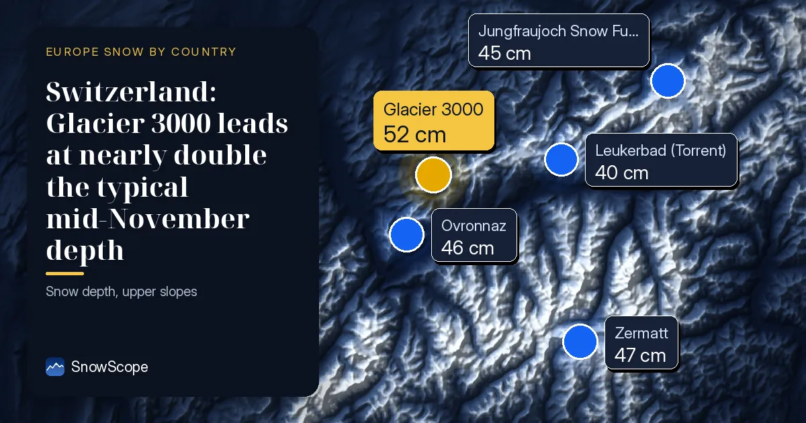

Suisse : Glacier 3000 en tête avec une épaisseur proche du double de la normale mi-novembre
Glacier 3000 est le leader en neige en Suisse avec 52 cm d'épaisseur, soit près du double de ce qu'on observe normalement à cette date. Trois des cinq principaux domaines dépassent déjà largement leurs niveaux typiques de mi-novembre, avec des chutes importantes prévues au cours de la prochaine semaine.
Consultez les prévisions neige en temps réel pour Glacier 3000 sur l'application SnowScopeHauteurs de neige, alertes poudreuse et carte 3D, gratuitement.
Au-dessus de la normale sur les hauts sommets
L'image satellite montre les domaines skiables suisses devançant leur moyenne saisonnière. Glacier 3000 affiche 187 % de la normale pour le 18 novembre, tandis que Zermatt accumule 214 cm à sa station mi-montagne (2 716 m) — une remarquable 690 % de l'épaisseur habituelle. Ovronnaz et Leukerbad sont plus proches de la normale, mais la plupart des zones en altitude ont construit leur base plus rapidement que ce que les hivers passés suggéraient.
Cette augmentation précoce est réelle, ce n'est pas une illusion d'optique. Notre modèle de neige couvre 31 030 km2 en Suisse. Aujourd'hui, 16 060 km2 sont enneigés, soit une augmentation de 1 640 km2 par rapport à hier. Il y a une semaine, seuls 12 550 km2 avaient de la neige. La tendance est claire : la neige arrive plus tôt et s'accumule plus vite que la moyenne de novembre.
| Station | Aujourd'hui | Normale à cette date | Part de la normale |
|---|---|---|---|
| Glacier 3000 | 43 cm | 23 cm | 187 % |
| Zermatt | 214 cm | 31 cm | 690 % |
| Ovronnaz | 27 cm | 19 cm | 142 % |
| Jungfraujoch Snow Fun Park | 59 cm | 71 cm | 83 % |
| Leukerbad (Torrent) | 15 cm | 16 cm | 94 % |

Où se situe la neige en ce moment
La neige est présente partout au-dessus de 1 500 m, où la couverture atteint 93 % et les épaisseurs augmentent rapidement. Entre 2 000 et 2 500 m, la moyenne est de 8 cm sur la zone cartographiée. Au-dessus de 2 500 m, la moyenne monte à 21 cm. En dessous de 1 500 m, le terrain reste surtout dégagé, les skieurs et riders de début de saison doivent donc se diriger vers les remontées hautes.
Le satellite observe 52 % du terrain modélisé de la Suisse en blanc aujourd'hui. C'est un bon départ. Les Alpes du Valais mènent la charge : 116 cm de neige fraîche y sont tombés au cours des 72 dernières heures. L'Oberland bernois en a reçu 72 cm dans le même laps de temps. Ces chiffres proviennent de notre modèle, qui estime la neige sur les régions cartographiées ; ils ne correspondent pas à une mesure en un seul point.

Classement des cinq principaux domaines aujourd'hui
Glacier 3000 domine avec 52 cm, suivi de Zermatt à 47 cm et Ovronnaz à 46 cm. Jungfraujoch Snow Fun Park affiche 45 cm, tandis que Leukerbad atteint 40 cm. Les cinq domaines ont reçu de la neige fraîche au cours des trois derniers jours — Glacier 3000 en a vu 77 cm, Ovronnaz 63 cm, et Jungfraujoch 58 cm. Ce sont des estimations pour la zone du domaine, calculées à partir de notre modèle ; elles vous indiquent quelles zones ont la meilleure base, non l'épaisseur exacte en un point unique de la piste.
Ce qui arrive au cours des sept prochains jours
D'autres neiges sont en route. Vendredi 19 novembre marque le début d'une vague plus intense. Le pic est prévu le 20 novembre — notre modèle prévoit 39 cm ce jour-là. Sur les trois prochains jours, Glacier 3000 devrait gagner 96 cm, Ovronnaz 82 cm, et Zermatt 77 cm. Sur les sept jours complets, le pays pourrait recevoir jusqu'à 128 cm dans les zones les plus arrosées.
C'est une prévision, pas une certitude. Les patterns météorologiques changent. Mais le signal est fort : un système humide et lent-moving campera sur les Alpes tout le weekend et en début de semaine prochaine. D'ici le 21 novembre, la situation changera — nous en saurons beaucoup plus.
Tranches d'altitude : où skier
La ligne critique se situe à 1 500 m. En dessous, la neige est encore rare — 15 % de couverture et sol surtout dégagé. De 1 500 à 2 000 m, la couverture grimpe à 93 % mais l'épaisseur est mince à 3 cm ; les rochers peuvent affleurer. De 2 000 à 2 500 m, la base se consolide : 8 cm de moyenne et 100 % de couverture. Au-dessus de 2 500 m, les épaisseurs atteignent 21 cm et la couverture est complète.
Pour le moment, privilégiez les terrains au-dessus de 2 000 m si vous sortez. Les tempêtes à venir combleront les mi-altitudes, mais les rochers restent un risque sur les pentes fines en dessous de cette ligne.
Trois jours de changements
La tendance raconte l'histoire. Le 16 novembre, Ovronnaz menait avec 136 cm à son point haut, mais seuls 16 510 km2 étaient enneigés. Le 17 novembre, Zermatt a grimpé en tête avec 47 cm mesurés ce jour-là, mais la zone enneigée a rétréci à 14 750 km2 lors de la réactualisation du modèle. Aujourd'hui, Glacier 3000 est le leader avec 52 cm, et la zone couverte a rebondi à 16 060 km2. Ces variations reflètent comment notre modèle se met à jour et comment la neige fraîche se distribue inégalement sur la chaîne. Le signal sous-jacent — plus de neige arrive plus vite que la normale pour mi-novembre — reste solide.
Conseils aux skieurs
- Visez des altitudes au-dessus de 2 000 m pour le moment. L'épaisseur et la couverture y sont fiables ; en dessous, la couverture est mince et les rochers affleures restent la norme.
- Glacier 3000 et les Alpes du Valais sont votre meilleur choix aujourd'hui. Elles cumulent la base la plus épaisse et ont reçu le plus de neige fraîche au cours des trois derniers jours.
- Si vous pratiquez le hors-piste, consultez le dernier bulletin avalanches officiel de votre canton et de votre tranche d'altitude. De la neige fraîche sur une base mince peut glisser sur les terrains raides.
- Vendredi et samedi verront les chutes les plus intenses. Attendez-vous à des files d'attente aux remontées et une visibilité variable ; prévoyez des runs plus courts et des pentes plus sûres.
- Suivez la mise à jour de la prévision le 21 novembre. La prochaine vague de neige changera quel domaine mène, et les choix de terrains changeront.
À propos de ces chiffres
Les hauteurs de neige des stations sont la neige la plus épaisse sur le haut du domaine, d'après le modèle de neige SnowScope (environ 1 km, calcul du 18 novembre) ; ce sont des estimations pour une zone, pas une mesure en un point. Les valeurs des stations de mesure sont mesurées à la date indiquée. Les prévisions peuvent changer. Consultez toujours le bulletin d'avalanche officiel avant le hors-piste.
Citer ce bulletin
Pour la recherche, l'enseignement ou la presse : chiffres et graphiques réutilisables librement sous CC BY 4.0 avec cette citation.
SnowScope (2026), Suisse : Glacier 3000 en tête avec une épaisseur proche du double de la normale mi-novembre, https://snowscope.app/blog/fr/2026/11/switzerland-snow-ahead-of-normal-18-november-2026.html, consulté le 2026-11-18
SnowScope (Atlas Labs). (2026, November 18). Suisse : Glacier 3000 en tête avec une épaisseur proche du double de la normale mi-novembre. SnowScope snow reports. https://snowscope.app/blog/fr/2026/11/switzerland-snow-ahead-of-normal-18-november-2026.html
BibTeX
@misc{snowscope2026switzerlandsnowaheadofno,
author = {{SnowScope (Atlas Labs)}},
title = {Suisse : Glacier 3000 en tête avec une épaisseur proche du double de la normale mi-novembre},
year = {2026},
month = nov,
howpublished = {\url{https://snowscope.app/blog/fr/2026/11/switzerland-snow-ahead-of-normal-18-november-2026.html}},
note = {Published 2026-11-18 11:31 UTC; accessed 2026-11-18}
}· CC BY 4.0 · Méthodes, données et outils →
Glacier 3000 : neige et température selon l'altitude, cet hiver vs l'hiver dernier (outils) →
Suivre Glacier 3000
Gratuit : un message quand la neige arrive, et la météo chaque matin.